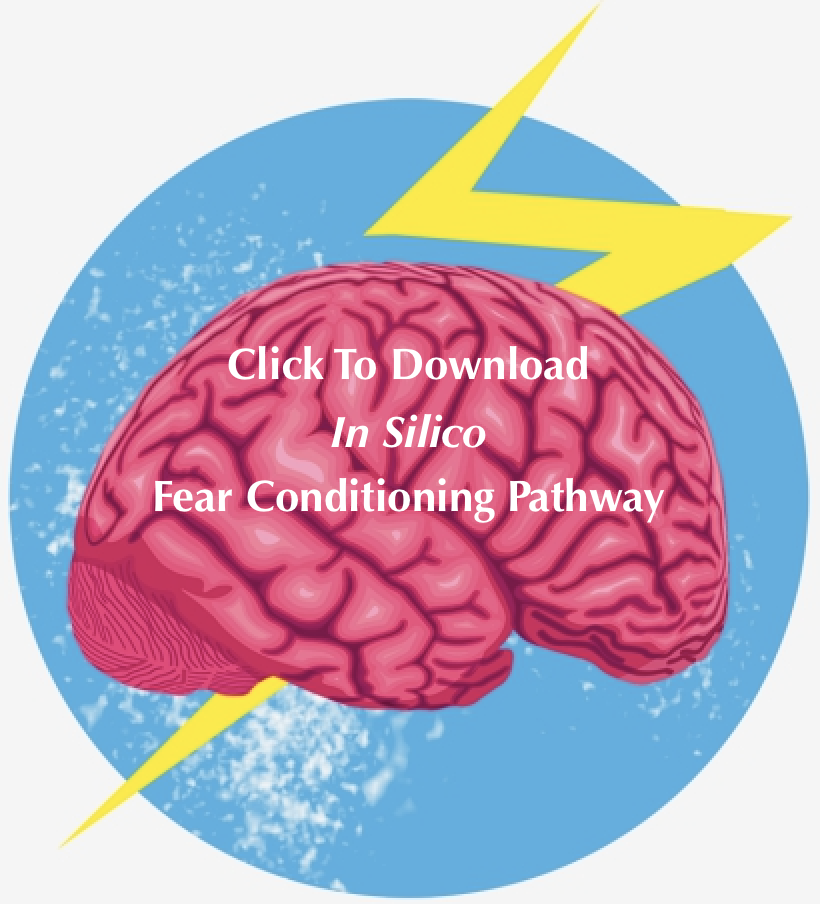
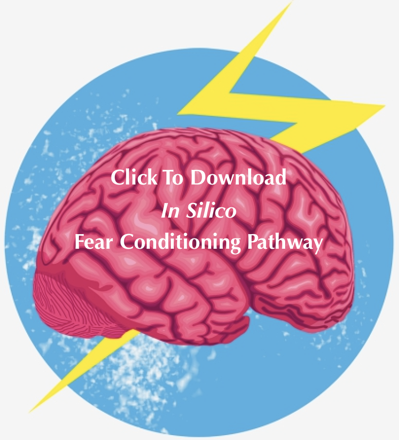

Pulling it All Together
Inherent in the definition of conditioned fear is the learned association between two stimuli, through memory consolidation. The expression of this fear occurs via the Pavlovian pathway. That is, the neural pathway containing the basolateral amygdala, the prefrontal cortex, and the central amygdala. Feedback from freezing, the behavioral response to a conditioned stimulus, initiates neuromodulation of the circuit, as well as gamma-theta coupled oscillations.
The results of this study suggest likely biochemical mechanisms underlying the formation of gamma oscillations, with respect to the fear conditioning pathway in the amygdala. Increased spontaneous excitatory post-synaptic activity in the prefrontal cortex as well as the dendritic compartments of basal amygdala neurons results from the binding of norepinephrine beta receptors that increase NMDA currents, causing increased inhibitory calcium currents. This suggests one possible mechanism, by which the calcium binding PV+ interneurons comprising the inhibitory network of gamma oscillations could be activated. The second mechanism suggested by this study’s results involves dopamine binding to dopamine 2 receptors, which increases the GABAA-like synaptic currents in the medial prefrontal cortex. Ionotropic GABAA receptors provides an inward chloride conductance that hyperpolarizes the cell. Depolarization of inhibitory interneurons increases the power of gamma as a result of this hyperpolarization. Tonic release of dopamine due to freezing might, therefore, cause tonic GABAergic inhibition of PV+ interneurons, generating ING rhythms. As kainate and synaptically released glutamate depolarize the axons of PV+ interneurons, triggering spontaneous ectopic action potentials in neuronal axons, this study further suggests that these neuromodulators also increase gamma oscillations. This study’s results, consequently, provide a convincing foundation for future experimentation, which could illuminate causality – and not simply correlativity – of backpropagation in the formation of neural synchrony.
.
.
Senior Capstone Research Poster
Presented to Tufts University Biomedical Engineering Faculty on April 30, 2019
 
